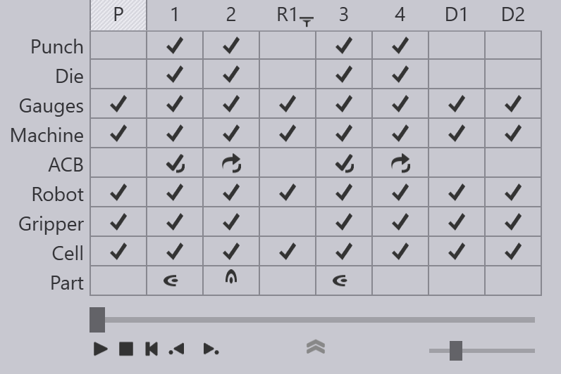
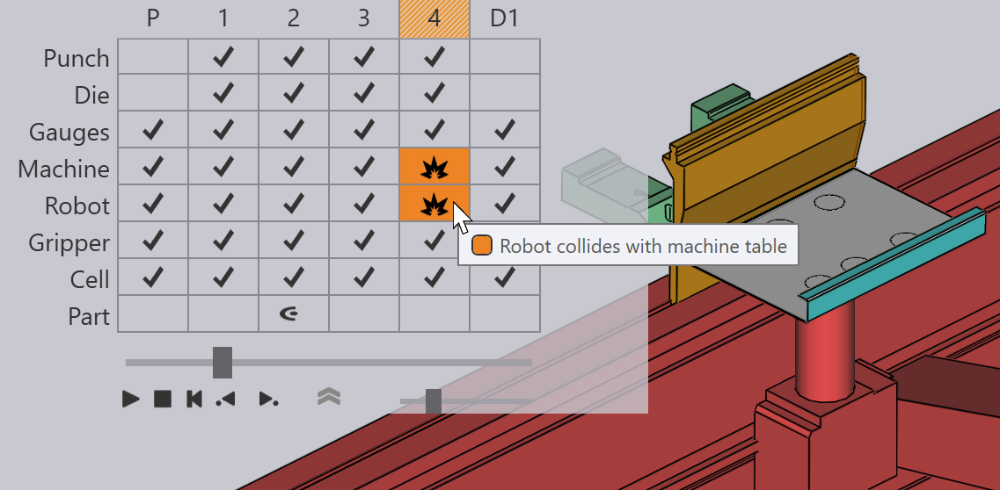
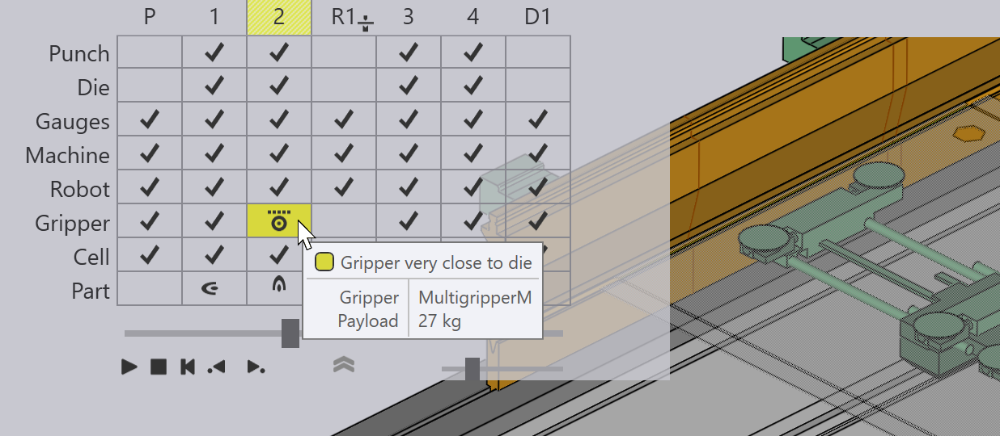
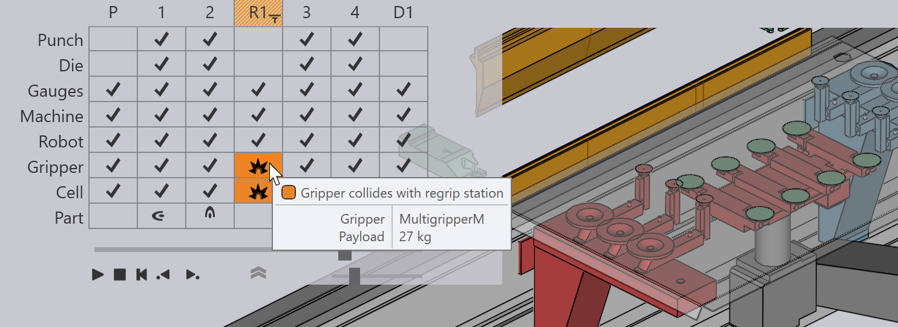

Navigátor ohýbání

Navigátor ohýbání v horní části obrazovky poskytuje přehled o kompletním cyklu. Většina ikon a terminologie používaných v navigátoru je podobná ikonám a těm používaným v navigátoru pro ruční ohýbání. Nicméně dodatečná složitost robotického ohýbání přidává některé další řádky a sloupce, které zde popisujeme.
Sloupce Vyzvednutí, Přeuchopení a Ukládání
Obrázek výše ukazuje navigátor ohýbání zobrazený pro díl BendMaster se čtyřmi ohyby. Ohyby lze vidět ve sloupcích označených 1 až 4 a jsou zobrazeny některé další sloupce.
-
Sloupec označený P představuje operaci vyzvednutí dílu. Před zahájením ohýbání musí BendMaster vyzvednout surový materiál (plochý plech) z palety nebo z dávkovače dílů. Tento sloupec představuje tuto operaci. Kliknutím na něj a pomocí posuvného regulátoru si můžete prohlédnout simulaci operace vyzvednutí. Pokud během tohoto vyzvedávání dojde ke kolizím nebo jiným problémům, příslušné řádky v tomto sloupci se rozsvítí žlutě (pro varování) nebo červeně (pro chyby).
-
Sloupce označené značkami jako R1, R2 představují operace přeuchopení. Během vyzvedávání vyzvedne upínač díl tak, že jej uchopí podél určité roviny v určité orientaci. Někdy nelze všechny ohyby v dílu zpracovat se stejnou orientací a upínač může potřebovat díl přeuchopit, aby bylo možné pokračovat. V tomto příkladu musel upínač vyzvednout díl s odlišnou orientací mezi ohyby 2 a 3 pomocí přeuchopení. Sloupec R1 lze použít k simulaci tohoto přeuchopení nebo ke sledování této operace z hlediska kolizí nebo jiných chyb.
-
Sloupce označené značkami jako D1, D2 představují operace ukládání dílů na finální paletu, dopravník nebo koš. Každý sloupec ukládání představuje konkrétní orientaci dílu na ukládacím stohu a může existovat několik takových orientací v závislosti na použitém vzoru ukládání.
Robot, upínač a řádky buňky
Byly přidány nové řádky pro Robot, Gripper a další součásti Cell. Tyto řádky se používají k signalizaci kolizí nebo jiných chyb. Například kolize mezi robotem a stolem stroje je signalizována červenou ikonou kolize v obou těchto řádcích. Během simulace se kolidující součásti také zbarví červeně:

Řádek Gripper zobrazuje kolize nebo jiné problémy související s upínačem. Například obrázek níže zobrazuje varování týkající se sacího upínače:

Řádek Cell představuje stav ostatních součástí buňky, včetně:
-
Palety pro vyzvednutí a odkládací palety
-
Dávkovač dílů
-
Přehmatávací stanice
-
Upínací stanice
-
Dopravníky
Zde je ikona chyby v řádku Cell označující kolizi s přehmatávací stanicí:

Klávesové zkratky
Tyto klávesové zkratky mohou pomoci urychlit navigaci mezi různými režimy a panely v TecZone Bend.
Zkratky navigátoru |
|
PgUp PgDn |
Přepnutí na předchozí nebo následující stádium simulace |
|
Přepnutí na předchozí nebo následující fázi v rámci stejného stádia. Například fáze ohýbání jsou kroky jako vložení dílu, zasunutí dorazu, ohýbání a rozevření lisovacího beranu. |
Spacebar |
Start/stop simulace |
Z |
Rozbalení/sbalení panelu navigace. |
Zkratky panelu (klávesnice) |
|
E E |
Otevření panelu pro aktuální stádium (ohyb / vyzvednutí / přeuchopení / uložení) |
E B |
Otevření panelu Dorazový palec pro aktuální ohyb |
E D |
Otevření panelu Matrice |
E G |
Otevření panelu Upínač (pro nastavení polohy úchytu pro toto stádium) |
E R |
Otevření panelu Strategie robota pro aktuální ohyb |
E W |
Otevření panelu Body trasy pro aktuální stádium |
Zkratky panelu (myš) |
|
|
První kliknutí přepne simulaci do tohoto stádia. Druhým kliknutím se otevře panel pro stádium |
|
Otevření panelu Dorazový palec pro aktuální ohyb |
|
Otevření panelu Matrice |
|
Otevření panelu Razník |
|
Otevření panelu Upínač |
|
Otevření panelu Paleta |
|
Otevření panelu Kamera (úprava obrázků rozpoznání vyzvednutí pro tento díl) |
|
Otevření panelu Vyzvednutí |
|
Otevření panelu Sání (nastavení přísavek pro tento upínač) |
|
Otevření panelu Ukládání |
|
Otevření panelu Strategie robota pro aktuální ohyb |
|
Otevření panelu Body trasy pro aktuální stádium |
|
Otevření panelu Přehmatávací stanice |